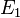
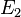
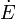
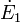
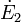
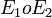
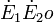
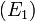
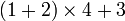

Обратная польская запись

| Префиксная нотация Постфиксная нотация |
{kind=link}
Обра́тная по́льская нота́ция (ОПН) — форма записи математических выражений, в которой операнды расположены перед знаками операций. Также именуется как обратная польская запись, обратная бесскобочная запись (ОБЗ), постфиксная нотация, бесскобочная символика Лукашевича, польская инверсная запись, ПОЛИЗ.
Стековой машиной называется алгоритм, проводящий вычисления по обратной польской записи (см. ниже пример вычисления выражений).
Содержание[убрать] |
История [править]
Обратная польская нотация была разработана австралийским философом и специалистом в области теории вычислительных машин Чарльзом Хэмблином в середине 1950-х на основе польской нотации, которая была предложена в 1920 году польским математиком Яном Лукасевичем. Работа Хэмблина была представлена на конференции в июне 1957, и издана в 1957 и 1962.
Первыми компьютерами, поддерживающими обратную польскую нотацию были KDF9 от English Electric Company, который был анонсирован в 1960 и выпущен (появился в продаже) в 1963, и американский Burroughs B5000, анонсирован в 1961, выпущен в том же 1963. Один из проектировщиков B5000, Р. С. Бартон, позже написал, что разработал обратную польскую запись независимо от Хэмблина, примерно в 1958, в процессе чтения книги по символьной логике, и до того как познакомился с работой Хэмблина.
Компания Friden перенесла ОПН в настольные калькуляторы, выпустив в июне 1964 модель EC-130. А в 1968 инженеры Hewlett-Packard разработали настольный калькулятор 9100A с поддержкой ОПН. Этот калькулятор сделал обратную польскую нотацию популярной среди учёных и инженеров, даже несмотря на то, что в ранней рекламе 9100A ОПН не упоминалась. В 1972 калькулятор HP-35 с поддержкой ОПН стал первым научным карманным калькулятором.
В 1971 году появился оригинальный язык программирования Forth, языковая машина которого имеет двухстековую структуру и где все вычисления проводятся на стеке. В этом языке ОПН является естественным способом записи любых операций с данными, хотя возможна, при желании, реализация и обычной (инфиксной) записи арифметических операций.
ОПН применялась в советском инженерном калькуляторе Б3-19М (совместная разработка с ГДР), выпущенном в 1976 году. Все выпускаемые в СССР вплоть до конца 1980-х годов программируемые микрокалькуляторы, за исключением «Электроника МК-85», использовали ОПН — она проще реализовывалась и позволяла обойтись в программировании вычислений меньшим числом команд, по сравнению с обычной алгебраической нотацией, а количество программной памяти в этих моделях всегда было критическим ресурсом (не более 105 ячеек, при том, что команда занимала 1-2 ячейки). ОПН используется в современных российских программируемых калькуляторах «Электроника МК-152» и «ЭЛЕКТРОНИКА МК-161», что обеспечивает их совместимость с программами, написанными для советских калькуляторов.
Определение [править]
Чтобы дать индуктивное определение постфиксной нотации[1], обозначим выражения в инфиксной нотации , , , эквивалентные им выражения в постфиксной нотации  , ,  соответственно; — произвольный бинарный оператор, тогда:
1. Если — переменная или константа, то есть .
2. Если — выражение вида , то есть .
3. Если — выражение вида , то есть .
Описание [править]
Отличительной особенностью обратной польской нотации является то, что все аргументы (или операнды) расположены перед знаком операции. В общем виде запись выглядит следующим образом:
- Запись набора операций состоит из последовательности операндов и знаков операций. Операнды в выражении при письменной записи разделяются пробелами.
- Выражение читается слева направо. Когда в выражении встречается знак операции, выполняется соответствующая операция над двумя последними встретившимися перед ним операндами в порядке их записи. Результат операции заменяет в выражении последовательность её операндов и её знак, после чего выражение вычисляется дальше по тому же правилу.
- Результатом вычисления выражения становится результат последней вычисленной операции.
Например, рассмотрим вычисление выражения 7 2 3 * - (эквивалентное выражение в инфиксной нотации: 7-2*3).
- Первый по порядку знак операции — «*», поэтому первой
выполняется операция умножения над операндами 2 и 3 (они стоят
последними перед знаком). Выражение при этом преобразуется к виду
7 6 -(результат умножения — 6, — заменяет тройку «2 3 *»). - Второй знак операции — «-». Выполняется операция вычитания над операндами 7 и 6.
- Вычисление закончено. Результат последней операции равен 1, это и есть результат вычисления выражения.
Очевидное расширение обратной польской записи на унарные, тернарные и операции с любым другим количеством операндов: при использовании знаков таких операций в вычислении выражения операция применяется к соответствующему числу последних встретившихся операндов.
Особенности обратной польской записи следующие:
- Порядок выполнения операций однозначно задаётся порядком следования знаков операций в выражении, поэтому отпадает необходимость использования скобок и введения приоритетов и ассоциативности операций.
- В отличие от инфиксной записи, невозможно использовать одни и те же
знаки для записи унарных и бинарных операций. Так, в инфиксной записи
выражение
5 * (-3 + 8)использует знак «минус» как символ унарной операции (изменение знака числа), а выражение(10 - 15) * 3применяет этот же знак для обозначения бинарной операции (вычитание). Конкретная операция определяется тем, в какой позиции находится знак. Обратная польская запись не позволяет этого: запись5 3 - 8 + *(условный аналог первого выражения) будет интерпретирована как ошибочная, поскольку невозможно определить, что «минус» после 5 и 3 обозначает не вычитание; в результате будет сделана попытка вычислить сначала5 - 3, затем2 + 8, после чего выяснится, что для операции умножения не хватает операндов. Чтобы всё же записать это выражение, придётся либо переформулировать его, либо ввести для операции изменения знака отдельное обозначение, например, «±»:5 3 ± 8 + *. - Так же, как и в инфиксной нотации, в ОПН одно и то же вычисление
может быть записано в нескольких разных вариантах. Например, выражение
(10 - 15) * 3в ОПН можно записать как10 15 - 3 *, а можно — как3 10 15 - * - Из-за отсутствия скобок обратная польская запись короче инфиксной. За этот счёт при вычислениях на калькуляторах повышается скорость работы оператора (уменьшается количество нажимаемых клавиш), а в программируемых устройствах сокращается объём тех частей программы, которые описывают вычисления. Последнее может быть немаловажно для портативных и встроенных вычислительных устройств, имеющих жёсткие ограничения на объём памяти.
Вычисления на стеке [править]
Общий порядок [править]
Автоматизация вычисления выражений в обратной польской нотации основана на использовании стека. Алгоритм вычисления для стековой машины элементарен:
- Обработка входного символа
- Если на вход подан операнд, он помещается на вершину стека.
- Если на вход подан знак операции, то соответствующая операция выполняется над требуемым количеством значений, извлечённых из стека, взятых в порядке добавления. Результат выполненной операции кладётся на вершину стека.
- Если входной набор символов обработан не полностью, перейти к шагу 1.
- После полной обработки входного набора символов результат вычисления выражения лежит на вершине стека.
Реализация стековой машины, как программная, так и аппаратная, чрезвычайно проста и может быть очень эффективной. Обратная польская запись совершенно унифицирована — она принципиально одинаково записывает унарные, бинарные, тернарные и любые другие операции, а также обращения к функциям, что позволяет не усложнять конструкцию вычислительных устройств при расширении набора поддерживаемых операций. Это и послужило причиной использования обратной польской записи в некоторых научных и программируемых микрокалькуляторах.
Пример вычисления выражений [править]
Выражение  в ОПН может быть записано так: 1 2 + 4 × 3 +
Вычисление производится следующим образом (указано состояние стека после выполнения операции):
| Ввод | Операция | Стек |
|---|---|---|
| 1 | поместить в стек | 1 |
| 2 | поместить в стек | 1, 2 |
| + | сложение | 3 |
| 4 | поместить в стек | 3, 4 |
| * | умножение | 12 |
| 3 | поместить в стек | 12, 3 |
| + | сложение | 15 |
Результат, 15, в конце вычислений находится на вершине стека.
Другой способ представить работу стека в процессе вычисления представлен ниже (на примере калькулятора HP48S). (Вершина стека выделена цветом).
┌────┐ │ 1 │ 1 [Ввод] └────┘
┌────┐ │ 1 │ │ 2 │ 2 └────┘
┌────┐ │ 3 │ + └────┘
┌────┐ │ 3 │ │ 4 │ 4 └────┘
┌────┐ │ 12 │ * └────┘
┌────┐ │ 12 │ │ 3 │ 3 └────┘
┌────┐ │ 15 │ + └────┘
Клавиша «Ввод» (обозначаемая на калькуляторах как «Enter» или символом
«↑») выполняет роль разделителя операндов, когда два операнда
непосредственно следуют друг за другом. Если за операндом следует знак операции, то её нажатие не требуется, это сокращает количество действий, которые нужно выполнить для получения результата.
Преобразование из инфиксной нотации [править]
Эдсгер Дейкстра изобрёл алгоритм для преобразования выражений из инфиксной нотации
в ОПН. Алгоритм получил название «сортировочная станция», за сходство
его операций с происходящим на железнодорожных сортировочных станциях.
Инфиксная нотация — это форма математических записей, которую
использует большинство людей (например, 3 + 4 или 3 + 4 * (2 - 1)). Как и алгоритм вычисления ОПН, алгоритм сортировочной станции
основан на стеке. В преобразовании участвуют две текстовых переменных:
входная и выходная строки. В процессе преобразования используется стек,
хранящий ещё не добавленные к выходной строке операторы. Преобразующая
программа читает входную строку последовательно символ за символом
(символ — это не обязательно буква), выполняет на каждом шаге
некоторые действия в зависимости от того, какой символ был прочитан.
Простой пример [править]
Вход: 3 + 4
Добавим 3 к выходной строке (если прочитано число, то оно сразу добавляется к выходной строке).
Помещаем + (или его Идентификатор) в стек операторов.
Добавим 4 к выходной строке.
Мы прочитали всё выражение, теперь выталкиваем все оставшиеся в стеке
операторы в выходную строку. В нашем примере в стеке содержится только +.
Выходная строка: 3 4 +
В данном примере проявляются некоторые правила: все числа переносятся в выходную строку сразу после прочтения; когда выражение прочитано полностью, все оставшиеся в стеке операторы выталкиваются в выходную строку.
Алгоритм [править]
- Пока есть ещё символы для чтения:
-
-
- Читаем очередной символ.
- Если символ является числом, добавляем его к выходной строке.
- Если символ является символом функции, помещаем его в стек.
- Если символ является открывающей скобкой, помещаем его в стек.
- Если символ является закрывающей скобкой:
-
- До тех пор, пока верхним элементом стека не станет открывающая скобка, выталкиваем элементы из стека в выходную строку. При этом открывающая скобка удаляется из стека, но в выходную строку не добавляется. Если после этого шага на вершине стека оказывается символ функции, выталкиваем его в выходную строку. Если стек закончился раньше, чем мы встретили открывающую скобку, это означает, что в выражении либо неверно поставлен разделитель, либо не согласованы скобки.
- Если символ является оператором о1, тогда:
- 1) пока…
-
- … (если оператор o1 право-ассоциированый) приоритет o1 меньше приоритета оператора, находящегося на вершине стека…
- … (если оператор o1 ассоциированный, либо лево-ассоциированный) приоритет o1 меньше либо равен приоритету оператора, находящегося на вершине стека…
-
- … выталкиваем верхние элементы стека в выходную строку;
- 2) помещаем оператор o1 в стек.
-
- Когда входная строка закончилась, выталкиваем все символы из стека в выходную строку. В стеке должны были остаться только символы операторов; если это не так, значит в выражении не согласованы скобки.
Сложный пример [править]
Приоритеты: • ^ высокий • * / средний • + - низкий Вход: 3 + 4 * 2 / (1 - 5)^2 Читаем «3» Добавим «3» к выходной строке Выход: 3 Читаем «+» Кладём «+» в стек Выход: 3 Стек: + Читаем «4» Добавим «4» к выходной строке Выход: 3 4 Стек: + Читаем «*» Кладём «*» в стек Выход: 3 4 Стек: + * Читаем «2» Добавим «2» к выходной строке Выход: 3 4 2 Стек: + * Читаем «/» Выталкиваем «*» из стека в выходную строку, кладём «/» в стек Выход: 3 4 2 * Стек: + / Читаем «(» Кладём «(» в стек Выход: 3 4 2 * Стек: + / ( Читаем «1» Добавим «1» к выходной строке Выход: 3 4 2 * 1 Стек: + / ( Читаем «-» Кладём «-» в стек Выход: 3 4 2 * 1 Стек: + / ( - Читаем «5» Добавим «5» к выходной строке Выход: 3 4 2 * 1 5 Стек: + / ( - Читаем «)» Выталкиваем «-» из стека в выходную строку, выталкиваем «(» Выход: 3 4 2 * 1 5 - Стек: + / Читаем «^» Кладём «^» в стек Выход: 3 4 2 * 1 5 - Стек: + / ^ Читаем «2» Добавим «2» к выходной строке Выход: 3 4 2 * 1 5 - 2 Стек: + / ^ Конец выражения Выталкиваем все элементы из стека в строку Выход: 3 4 2 * 1 5 - 2 ^ / +
Оптимизация выражений [править]
Если вы пишете интерпретатор, то выходная строка, полученная после преобразования исходного выражения в обратную польскую нотацию, может храниться вместо исходного выражения для последующей интерпретации. Обратная польская нотация также позволяет компьютеру упрощать выражения.
Пример алгоритма упрощения выражения [править]
Рассмотрим алгоритм, который осуществляет предвычисление констант в выражении. Дано выражение в ОПН. Нам понадобится стек для хранения смешанных данных (чисел и операторов).
Алгоритм подобен тому, который применяется для вычисления выражений. Мы просматриваем выражение слева направо.
Пока есть символы для чтения:
-
-
- Читаем очередной символ.
- Если символ является числом, помещаем его в стек.
- Если символ является переменной, считая что переменная имеет значение null, помещаем символ в стек.
- Если символ является оператором:
- 1) (если все аргументы оператора, лежащие в стеке, имеют значение, отличное от null) выталкиваем аргументы оператора из стека и помещаем в стек результат операции;
- 2) (если хотя бы один из аргументов имеет значение null) считая что результат операции null, кладём символ оператора в стек.
-
После того, как всё выражение просмотрено, то, что осталось в стеке, является оптимизированым выражением (операторы выражения лежат в стеке в обратном порядке).
Пример работы алгоритма [править]
Выражение Инфиксая нотация: exp(-1/2*x) Обратная Польская нотация: -1 2 / x * exp Читаем: «-1» Кладём «-1» в стек Стек: -1 Читаем: «2» Кладём «2» в стек Стек: -1 2 Читаем: «/» Вычисляем частное, результат кладём в стек Стек: -0.5 Читаем: «x» Кладём «x» в стек со значением null Стек: -0.5 x(null) Читаем: «*» Кладём «*» в стек со значением null Стек: -0.5 x(null) *(null) Читаем «exp» Кладём «exp» в стек со значением null Стек: -0.5 x(null) *(null) exp(null) Результат оптимизации: -0.5 x * exp
Данный метод, очевидно, не включает всех возможных способов оптимизации.
Примеры реализации [править]
В статье «Обратная польская запись: примеры реализации» собраны примеры реализации обратной польской записи на различных языках программирования.
Практические реализации [править]
В качестве практического применения данной методики можно привести организацию байт-кода конфигураций прикладных решений системы 1С:Предприятие. Официального подтверждения компания 1С не дает, но использующие данную систему программисты на специализированных форумах приводят доказательства и алгоритмы, позволяющие декомпилировать исходные тексты.
Литература [править]
Т. Пратт, М. Зелковиц Языки программирования: разработка и реализация = Terrence W. Pratt, Marvin V. Zelkowitz. Programming Languages: Design and Implementation. — 4-е издание. — Питер, 2002. — 688 с. — (Классика Computer Science). — 4000 экз. — ISBN 5-318-00189-0
Примечания [править]
- ↑ А. В. Ахо, Р. Сети, Д. Д. Ульман. Компиляторы: принципы, технологии и инструменты. М.: «Вильямс», 2003. С. 51.
Ссылки [править]
Языки программирования, использующие ОПН в качестве основной:
- Forth
- Factor
- Postscript
- Язык стилей оформления BibTeX
Другие ссылки: